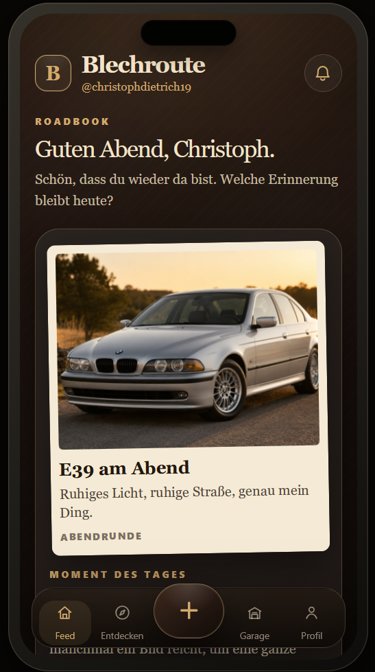

Für Privatpersonen
Kleine digitale Ideen, einfache Webanwendungen und praktische Helfer für Alltag, Übersicht und persönliche Abläufe.
Mehr ansehenChristoph Dietrich · Lausitz / Sachsen
Ich arbeite an kleinen Webseiten, digitalen Werkzeugen und Konzepten, die Ordnung schaffen und im Alltag wirklich helfen sollen. Dabei geht es mir nicht nur darum, dass etwas funktioniert, sondern dass es verständlich bleibt.
Einstiege
Die Seite ist als Portfolio gedacht und zeigt, woran ich arbeite, welche Richtung mich interessiert und wo digitale Struktur im Alltag helfen kann.
Kleine digitale Ideen, einfache Webanwendungen und praktische Helfer für Alltag, Übersicht und persönliche Abläufe.
Mehr ansehenDigitale Struktur für Abläufe, Serviceprozesse und interne Übersicht. Vom kleinen Betrieb bis zur größeren Organisation.
Mehr ansehenAustausch zu IT, Systemintegration, Supportprozessen und praktischen Einblicken in echte technische Abläufe.
Mehr ansehenAusgewählte Projekte
Küchenkumpel ist aktiv in privater Testphase. Blechroute zeigt den nächsten größeren Schritt. Serviceportal und KlarHaus zeigen Strukturdenken für echte Abläufe.

Kategorie: Demos · Lernprojekte · Konzepte
Küchenkumpel ist eine eigene Idee für eine kleine App rund um Küche, Rezepte, Alltag und einen sympathischen digitalen Begleiter.
Die Anwendung wird aktuell in einer kleinen privaten Testgruppe ausprobiert. Fehler, Wünsche und Verbesserungsideen werden gesammelt und Schritt für Schritt eingearbeitet.

Kategorie: Konzepte · Website und App · Communityidee
Blechroute ist ein Konzept für eine spätere Plattform rund um Autos, Touren, Spots, Fotos und gemeinsame Momente.
Geplant sind eine eigene Website, Strukturen für eine spätere App, Profile, Routen, gespeicherte Spots und einfache Funktionen für die Community.

Kategorie: Konzepte · Einblicke
Ein strukturiertes Serviceportal für Kundenfälle, Erinnerungen, Fälligkeiten und interne Abläufe.
Der Fokus liegt auf Übersicht, Priorisierung und nachvollziehbarer Bearbeitung.

Kategorie: Konzepte · Einblicke
Ein Konzept für die strukturierte Verwaltung von Eigentumswohnungen, Objekten, Kontakten und Abläufen.
Ziel ist eine ruhige, klare Oberfläche mit nachvollziehbaren Informationen.
Arbeitsweise
Technik
Aktuell arbeite ich vor allem mit HTML, CSS und Grundlagen in JavaScript. Dazu kommen Themen rund um Veröffentlichung, Hosting, Projektstruktur und die nächsten Schritte in Richtung größerer Konzepte für Websites und Apps.
Kontakt
Wenn es um beruflichen Austausch, Praktikumsmöglichkeiten oder einen Einblick in echte technische Abläufe geht, bin ich offen für ein Gespräch.
E-Mail: kontakt@christoph-it.de